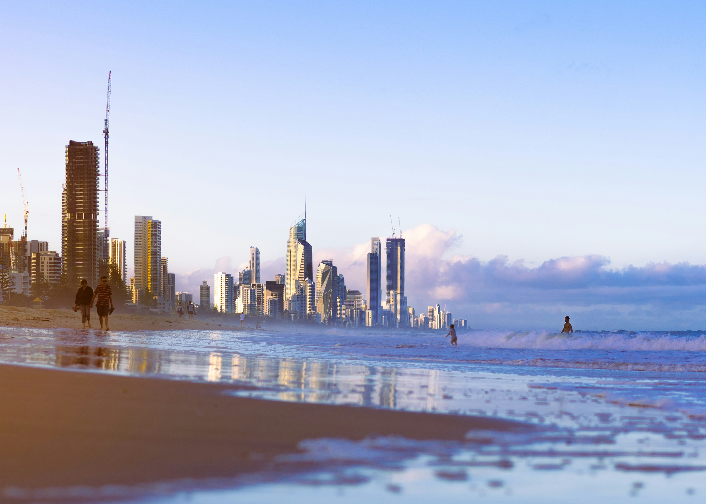
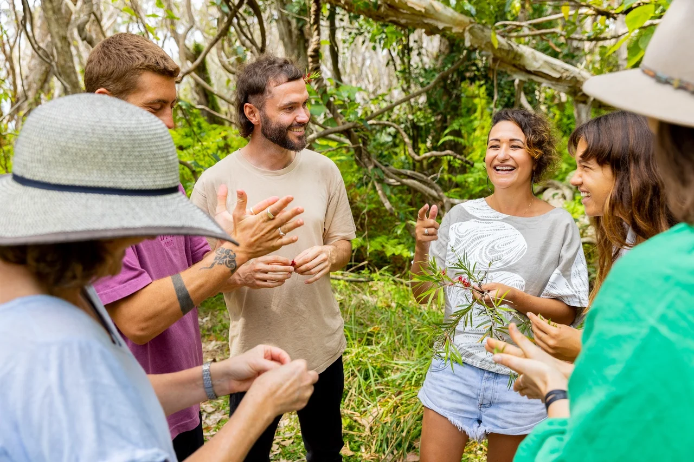

Why are we?
Through the planning, collaborating, and booking phases, it should be exciting. It should be fun. We want to help with everything we can prior to travel, to ensure your precious time is invested in deeply enjoying every special moment. With full support while travelling, we are there if any unexpected problems arise, and will provide assistance wherever we can.
Our carefully curated itineraries are designed for comfortable, meaningful experiences that bring together scenery, culture, and time to rest. We create journeys that feel personal, effortless, and memorable for every age and travel style.
Book NowHighlighted Experience
Plan for pleasure
The beauty of travelling across Queensland is the sense of discovery it offers. Whether you are seeking quiet coastal escapes, inspiring landscapes, or warm local hospitality, there is something for every pace and preference.
With a broad choice of destinations, activities, and cultures, each experience becomes part of a bigger story of connection, relief, and wonder. We help you uncover the places that feel right for you, creating a journey that balances adventure with comfort and remains deeply personal from start to finish.
The annual Toowoomba Carnival of Flowers

Cultural experience of Yura Tours
Unparalleled range
The beauty of travelling across Queensland is the sense of discovery it offers. Whether you are seeking quiet coastal escapes, inspiring landscapes, or warm local hospitality, there is something for every pace and preference.
With a broad choice of destinations, activities, and cultures, each experience becomes part of a bigger story of connection, relief, and wonder. We help you uncover the places that feel right for you, creating a journey that balances adventure with comfort and remains deeply personal from start to finish.